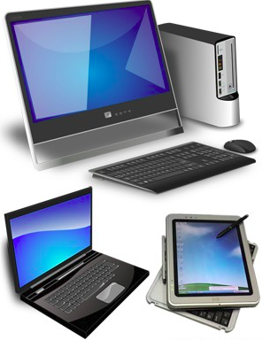

Welcome to the class! This is unit one of the course Introduction to Computers.This site will give students at the 8th 9th and 10th grade level a basic working knowledge of what a computer is and how it works. After viewing this site students will be able to formulate questions about the computer that will generate meaningful discussions in the classroom.
A computer is a machine that can be instructed to carry out sequences of arithmetic or logical operations automatically via computer programming. Modern computers have the ability to follow generalized sets of operations, called programs. These programs enable computers to perform an extremely wide range of tasks. A "complete" computer including the hardware, the operating system (main software), and peripheral equipment required and used for "full" operation can be referred to as a computer system. This term may as well be used for a group of computers that are connected and work together, in particular a computer network or computer cluster.
Computers are used as control systems for a wide variety of industrial and consumer devices. This includes simple special purpose devices like microwave ovens and remote controls, factory devices such as industrial robots and computer-aided design, and also general purpose devices like personal computers and mobile devices such as smartphones. The Internet is run on computers and it connects hundreds of millions of other computers and their users.
Early computers were only conceived as calculating devices. Since ancient times, simple manual devices like the abacus aided people in doing calculations. Early in the Industrial Revolution, some mechanical devices were built to automate long tedious tasks, such as guiding patterns for looms. More sophisticated electrical machines did specialized analog calculations in the early 20th century. The first digital electronic calculating machines were developed during World War II. The first semiconductor transistors in the late 1940s were followed by the silicon-based MOSFET (MOS transistor) and monolithic integrated circuit (IC) chip technologies in the late 1950s, leading to the microprocessor and the microcomputer revolution in the 1970s. The speed, power and versatility of computers have been increasing dramatically ever since then, with MOS transistor counts increasing at a rapid pace (as predicted by Moore's law), leading to the Digital Revolution during the late 20th to early 21st centuries.
Conventionally, a modern computer consists of at least one processing element, typically a central processing unit (CPU) in the form of a metal-oxide-semiconductor (MOS) microprocessor, along with some type of computer memory, typically MOS semiconductor memory chips. The processing element carries out arithmetic and logical operations, and a sequencing and control unit can change the order of operations in response to stored information. Peripheral devices include input devices (keyboards, mice, joystick, etc.), output devices (monitor screens, printers, etc.), and input/output devices that perform both functions (e.g., the 2000s-era touchscreen). Peripheral devices allow information to be retrieved from an external source and they enable the result of operations to be saved and retrieved.
Sample image of computers.
